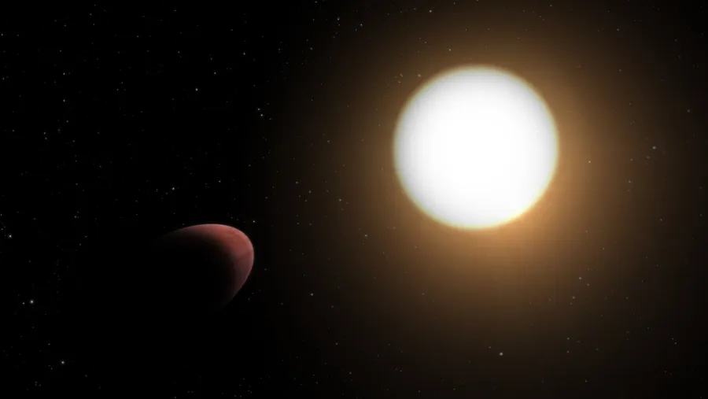

11. Januar 2022
WASP-103 b: ein Planet in Form eines Rugbyballs
Der ESA-Satellit Cheops hat erstmals die Verformung eines Exoplaneten nachgewiesen: WASP-103 b ist durch die Gezeitenkräfte seines Sterns nicht kugelförmig, sondern eher wie ein Rugbyball gestreckt.
Der Planet im Sternbild Herkules ist fast doppelt so groß wie Jupiter, hat das 1,5-Fache seiner Masse und umrundet seinen Stern in weniger als einem Tag. Aus der Form der Transit-Lichtkurve leitete das Team die sogenannte Love-Zahl ab, die beschreibt, wie die Masse im Inneren des Planeten verteilt ist. Für die Messung wurden auch Daten der Weltraumteleskope Hubble und Spitzer genutzt.
Quelle: ESA: "Cheops reveals a rugby ball-shaped exoplanet.", 11.01.2022